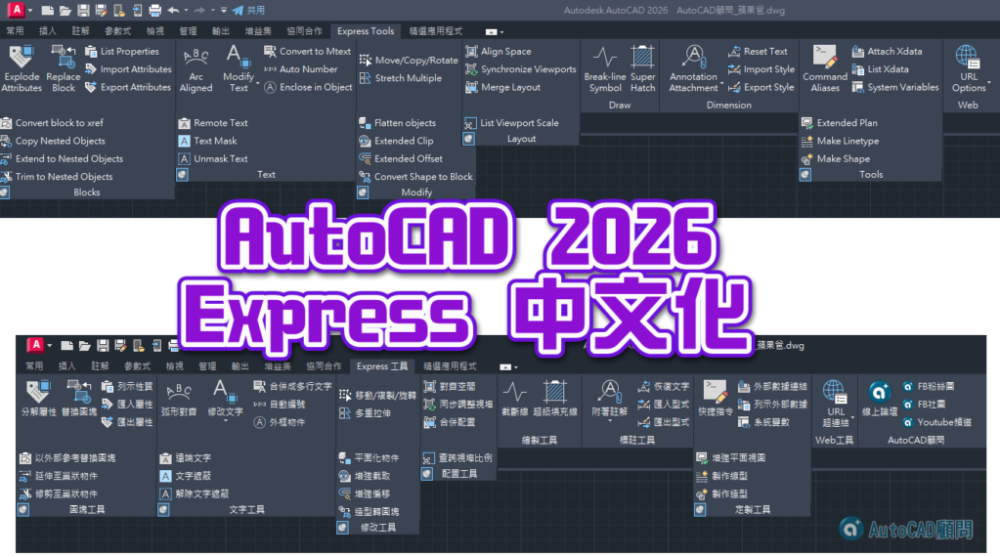

✨[優惠活動]慶祝十七週年の恆專業 續傳承 👉 詳全文...(點我) 👈

大家好：
這回整理了「AutoCAD 2026 Express繁體中文化」！
請幫忙分享論壇給需要的人，讓我們幫助更多人喔～
※截止時間：2025年05月05日 18時0分
記得分享給你的朋友喔
⭐請在您的FB動態公開分享「✨慶祝十七週年の恆專業 續傳承」此篇文章
⭐FB文章鏈接👇👇👇
https://www.facebook.com/share/p/1ArEMfCMCV/

請來AutoCAD粉絲團_FB專頁留言，方便私訊傳送門😁
⭐公開分享後截圖 PO上來 FB 文章，再私訊提供您【2026 Express繁體中文化】下載鏈接
註1：Express Tools 是 AutoCAD 原廠附贈的外掛程式，必須先安裝「 AutoCAD 主程式」預設的「英文版 EXPRESS 」，才可以安裝本中文化版程式。
註2：此中文化僅支援AutoCAD版本，並無支援mechanical版本(或其他版本)。
■AutoCAD 2026 Express中文化版本下載（下載權限專屬B會員）：
👇專屬B會員直接前往下載
https://www.autocad-tw.com/t30058-topic
解壓密碼：AutoCAD顧問_2026ExpressC
※👇進階學習如何自行掛入可參考私房教學1課程※
https://autocad-tw.1shop.tw/wv66rj
※操作教學：AutoCAD Express中文化版※
https://www.autocad-tw.com/t6523-topic
Express Tools 中文化版本整理_(閱讀權限：初級會員(積分1))